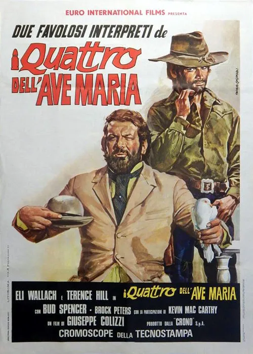

1968 · 40 tracce
Musiche di Carlo Rustichelli.
40 tracce pubblicate, inclusi album originale, versioni film e take alternativi. Esclusa la registrazione bonus della sessione di lavoro (traccia 41).
Gli elenchi documentano le edizioni pubblicate; la presenza di ciascuna traccia nel montaggio del film non è certificata.
Brani e ascolti
- 01
I quattro dell'Ave Maria: Finale
1:30 - 02
Sierra Caliente
2:13 - 03
Sfida al tramonto
2:20 - 04
Tensione
4:08 - 05
Ombre nascoste
1:57 - 06
Ore romantiche
1:20 - 07
Mexico Lindo
3:01 - 08
Motivo dei 4
1:46 - 09
Tamburi tamburi
1:45 - 10
Un bicchiere di troppo
1:57 - 11
Emozione
0:14 - 12
Le pistole si cercano
2:22 - 13
Una banda
1:49 - 14
Anda Mexico
1:27 - 15
Polka cuore e amore
1:26 - 16
Ricordi notturni
1:12 - 17
I quattro dell'Ave Maria: Main Titles
1:34 - 18
In the Jail
3:14 - 19
Cacopoulos' Plans
3:18 - 20
Desert Meeting
1:42 - 21
Cacopoulos Driving Free and Wild
1:46 - 22
The Battle
2:12 - 23
Main Theme Reprise
1:36 - 24
Pursued Green Praeries
2:25 - 25
Casino Mystery / An Old Enemy
2:29 - 26
Suite, Pt. 1
6:23 - 27
Suite, Pt. 2
5:53 - 28
Original End Titles
1:14 - 29
The Village's Band
1:32 - 30
Fiesta
2:07 - 31
Casino Music (Take I and II Edit)
2:00 - 32
Una banda (Film Version)
1:45 - 33
Mexico Lindo (Voices and Hand Claps Track)
4:05 - 34
Casino Music (Take II Long Version)
1:00 - 35
Main Theme (Harmonica Solo)
1:55 - 36
Ricordi notturni (Harmonica & Percussions Film Version)
0:53 - 37
Mexico Lindo (Long Version Mono Mix)
4:06 - 38
I quattro dell'Ave Maria (Percussion Track)
0:52 - 39
Ricordi notturni (Harmonica & Percussions Stereo Mix)
0:54 - 40
Mexico Lindo (Film Version Stereo Mix)
4:09
Fonti e riferimenti
- Scheda del film e creditiConsultata il 3 ottobre 2026.
- Edizione e lista delle tracceConsultata il 3 ottobre 2026.
- Edizione digitale e ascoltiConsultata il 3 ottobre 2026.
- Locandina — I quattro dell’Ave MariaConsultata il 3 ottobre 2026.